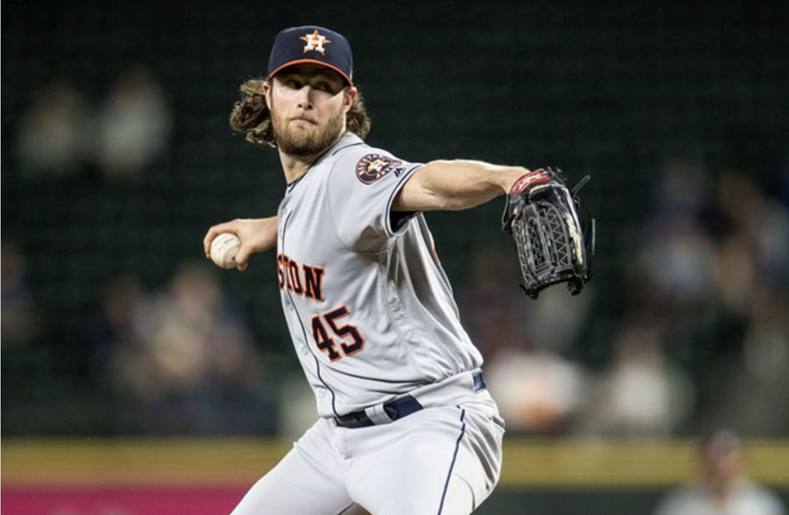

What's in a Fastball: How a 4-Seamer Becomes Elite
For all the love nasty sliders, curves, and changeups get in baseball, in the end, the fastball is still the most celebrated - everyone has one, and if you don’t have a good enough one you don’t make the majors. And for…